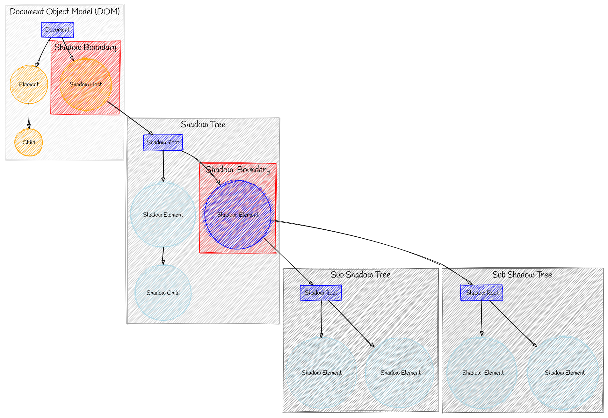

Embracing Simplicity: Lessons Learned from a Slow Blogging Journey
Description:Slow start with my blog.
Date:2024-03-06
Title: Embracing Simplicity: Lessons Learned from a Slow Blogging Journey
In a world inundated with complex frameworks, endless options, and a constant race for innovation, sometimes it's easy to lose sight of the beauty in simplicity. As I embarked on the journey of creating my own blog, I found myself entangled in a web of choices, frameworks, and technologies, ultimately realizing that simplicity often trumps complexity.
The journey began with grand aspirations. Eager to create a unique and customizable blog, I delved into the realm of static site generators. Initially drawn to the allure of Hugo and its plethora of themes, I soon found myself grappling with the limitations and complexities of customization. The struggle to modify existing themes while maintaining responsiveness across devices left me feeling disheartened.
Venturing further into the world of static site generators only seemed to exacerbate the issue. Each platform offered slight variations on the same fundamental principles, leaving me feeling as though I was trapped in a cycle of monotony.
It wasn't until I stumbled upon Astro, a blog static site generator, that I thought I had found the solution to my woes. Excited by the prospect of a sleek design and modern features, I eagerly dove into the framework, only to find myself lost in a labyrinth of dependencies and configurations. What initially seemed like a shortcut to success soon turned into a convoluted mess of technologies.
Frustrated by the complexity of it all, I made the bold decision to design my own blog system. Turning to web components as a potential solution, I quickly realized that even the most promising technologies have their limitations. The lack of state maintenance and cumbersome workarounds left me feeling defeated.

It was in this moment of defeat that I had an epiphany. Perhaps, simplicity was the answer all along. With renewed determination, I stripped away the layers of complexity and returned to basics. I created a simple static webpage, devoid of fancy frameworks and unnecessary dependencies.
As I reflected on my journey, I came to a profound realization. Sometimes, the simplest solution is also the most elegant. In my quest for innovation and customization, I had overlooked the beauty of simplicity. By embracing a minimalist approach, I had not only created a functional blog but also rediscovered the joy of creation.
In the end, it's not about the latest technology or the flashiest design. It's about creating something that resonates with you, something that reflects your vision and values. So, here's to embracing simplicity in a world of complexity, and finding beauty in the most unexpected places.
As I push my humble webpage to GitHub, I do so with a newfound sense of pride and purpose. And who knows, perhaps one day I'll revisit the idea of a blog, armed with the wisdom that simplicity is always in style.
As I embark on new projects and endeavors, I carry with me the lessons learned from my slow blogging journey. After all, sometimes the greatest discoveries are made when we take the time to slow down, simplify, and appreciate the beauty in the world around us..